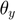

Explore PASSIVE rotations and EULER rates
Bradley Horton : 01-Mar-2016, bradley.horton@mathworks.com.au
Contents
- Introduction:
- An example of 3 successive PASSIVE rotations
- Create a passive rotation object
- Here are the PASSIVE rotation matrices
- Explore EULER rates
- The total angular velocity expressed in the BODY B frame is therefore
- We can write the angular velocity vector as a MATRIX equation
- The SINGULARITY between BODY rates and EULER rates
- The Euler rates can therefore be written as
- We can write the Euler rates vector as a MATRIX equation
Introduction:
A Passive rotation matrix, converts the co-ordinates of a point expressed in a fixed G-frame, into the co-ordinates of the same point expressed in the new B-frame.
An example of this concept is shown below

An example of 3 successive PASSIVE rotations
Say we start with a G-frame. We're going to apply 3 LOCAL axes rotations which will result in a newly orientated frame called the B-frame.
Assume that we apply these 3 successive rotations in the following order:
- R1Z occurs 1st about the LOCAL Z body axis , aka YAW
- R2Y occurs 2nd about the LOCAL Y body axis , aka PITCH
- R3X occurs 3rd about the LOCAL X body axis , aka ROLL
We can express a vector defined in the G axis into it's corresponding description in the B axis, using a PASSIVE rotation matrix, ie:
vB = R3X() * R2Y() * R1Z() * vG
OR, in a more compact form as:
vB = bRg * vG
Create a passive rotation object
syms phi theta psi OBJ_P = bh_rot_passive_G2B_CLS({'D1Z', 'D2Y', 'D3X'}, [phi, theta, psi], 'SYM')
OBJ_P =
bh_rot_passive_G2B_CLS with properties:
ang_units: SYM
num_rotations: 3
dir_1st: D1Z
dir_2nd: D2Y
dir_3rd: D3X
ang_1st: [1x1 sym]
ang_2nd: [1x1 sym]
ang_3rd: [1x1 sym]
Here are the PASSIVE rotation matrices
R1 = OBJ_P.get_R1 R2 = OBJ_P.get_R2 R3 = OBJ_P.get_R3
R1 = [ cos(phi), sin(phi), 0] [ -sin(phi), cos(phi), 0] [ 0, 0, 1] R2 = [ cos(theta), 0, -sin(theta)] [ 0, 1, 0] [ sin(theta), 0, cos(theta)] R3 = [ 1, 0, 0] [ 0, cos(psi), sin(psi)] [ 0, -sin(psi), cos(psi)]
Explore EULER rates
As we apply these local frame rotations, we can represent the angular rates of the rotating rames in the LOCAL frame co-ordinates. These local frame co-ordinates can then be converted into co-ordinates expressed in the final B frame.
For example, during each of the local axes rotations we can think of there being a START frame and an END frame:
START END Angular rate vector
frame frame associated with rotation
-------------------------------------------------------------------
R1Z(phi) G_frame a_frame [0 0 phi_dot]_G
R2Y(theta) a_frame c_frame [0 theta_dot 0 ]_a
R3X(psi) c_frame B_frame [psi_dot 0 0 ]_cWe can express each of the local frame angular velocities in components of the B frame - and we'll use PASSIVE rotation matrices to do this:
syms phi_dot theta_dot psi_dot aRg = R1; cRa = R2; bRc = R3; wb_part_1 = bRc * cRa * aRg * [0;0;phi_dot] % convert local G into B wb_part_2 = bRc * cRa * [0;theta_dot;0] % convert local a into B wb_part_3 = bRc * [psi_dot;0;0] % convert local c into B
wb_part_1 =
-phi_dot*sin(theta)
phi_dot*cos(theta)*sin(psi)
phi_dot*cos(psi)*cos(theta)
wb_part_2 =
0
theta_dot*cos(psi)
-theta_dot*sin(psi)
wb_part_3 =
psi_dot
0
0
The total angular velocity expressed in the BODY B frame is therefore
We can now construct the total angular velocity vector expressed in components of the final B frame.
wb = wb_part_1 + wb_part_2 + wb_part_3; pretty(wb)
/ psi_dot - phi_dot sin(theta) \ | | | theta_dot cos(psi) + phi_dot cos(theta) sin(psi) | | | \ phi_dot cos(psi) cos(theta) - theta_dot sin(psi) /
We can write the angular velocity vector as a MATRIX equation
Let's say that:
[p]
wb = [q]
[r]We can write a matrix equation of the form A.x = b that describes the relationship between the body rates and the Euler rates:
A * x = b
[ phi_dot] [p]
A * [theta_dot] = [q]
[ psi_dot] [r]syms p q r [A,b] = equationsToMatrix( wb(1)==p, ... wb(2)==q, ... wb(3)==r, [phi_dot, theta_dot, psi_dot]); pretty(A) pretty(b)
/ -sin(theta), 0, 1 \ | | | cos(theta) sin(psi), cos(psi), 0 | | | \ cos(psi) cos(theta), -sin(psi), 0 / / p \ | | | q | | | \ r /
The SINGULARITY between BODY rates and EULER rates
From the Matrix equation computed above there is actually an angle that causes the determinant of A to be ZERO, and hence prevents us from solving for the Euler rates iff we know the body rates.
The angle that cuases this problem is the rotation about the local Y axis, ie: the angle phi. Specifically it is when phi = 90 degrees.
det_A = simplify( det(A) ) solve( det_A ==0 )
det_A = -cos(theta) ans = pi/2
The Euler rates can therefore be written as
We can use the results of the previous section to write the Euler rates as functions of the body rates.
[ phi_dot]
euler_rates = [theta_dot]
[ psi_dot]euler_rates = inv(A) * [p; q; r]; euler_rates = simplify(euler_rates); pretty(euler_rates)
/ r cos(psi) + q sin(psi) \ | ----------------------- | | cos(theta) | | | | q cos(psi) - r sin(psi) | | | | p cos(theta) + r cos(psi) sin(theta) + q sin(psi) sin(theta) | | ------------------------------------------------------------ | \ cos(theta) /
We can write the Euler rates vector as a MATRIX equation
Similarly to what we did earlier we can write a matrix equation that describes the relationship between the body rates and the Euler rates:
some_A * x = b
[p] [ phi_dot]
some_A * [q] = [theta_dot]
[r] [ psi_dot][A,b] = equationsToMatrix( euler_rates(1)==phi_dot, ... euler_rates(2)==theta_dot, ... euler_rates(3)==psi_dot, [p,q,r]); pretty(A) pretty(b)
/ sin(psi) cos(psi) \ | 0, ----------, ---------- | | cos(theta) cos(theta) | | | | 0, cos(psi), -sin(psi) | | | | sin(psi) sin(theta) cos(psi) sin(theta) | | 1, -------------------, ------------------- | \ cos(theta) cos(theta) / / phi_dot \ | | | theta_dot | | | \ psi_dot /